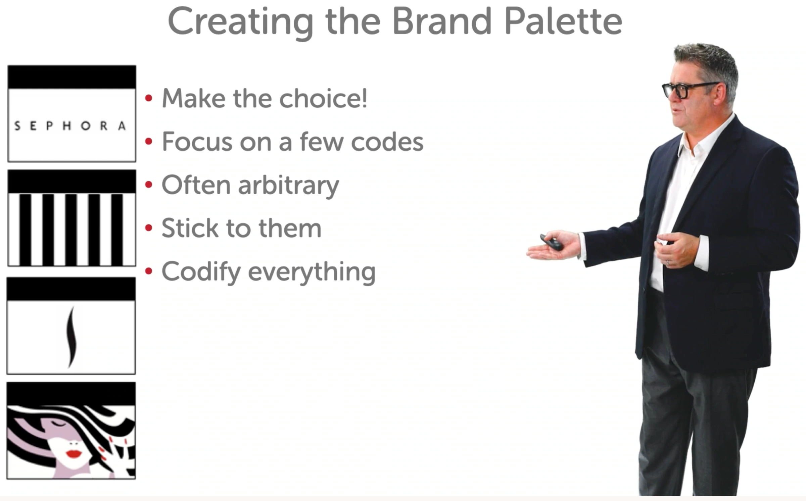

I promise this will be the only slide on “marketing theory”:

Each idea:
A theme
A logo
A ‘motif’
The rest is indicative — colour, fonts, style, photography etc. and we’ll keep exploring.
 Summary
Summary
A theme
A logo
A ‘motif’
The rest is indicative — colour, fonts, style, photography etc. and we’ll keep exploring.